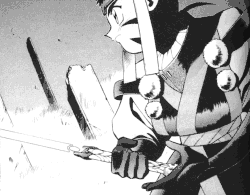

Fan Fiction Chat Room |
| Follow the following instructions if you would like to join my chat room. The primary purpose of this chat room is to talk about Tenchi FanFics, but we do discuss other related topics. |
Chat Room
Guidelines
Please follow the following guidelines while chatting in
#TenchiFF.
Chat through a Java Applet
You can chat right now in #TenchiFF with a Java Applet.
Some Useful IRC Commands
For those who are unfamiliar with IRC Commands.
Purpose
Come and visit me and other Fan Fic writes. Several writers come here to chat. You can chat with some of the writers that have posted on this page. Ask them questions about their current fan fics or another related topics. Voice your opinion to them LIVE about their stories.
Regular meetings are held every evenings starting at 8PM EST till very tate at night. But come anytime, there are many people online at any given time. Usually there are discussions held about Tenchi, Fan Fics, Anime, and anything related. Also, behave and follow the chat room guidelines or be sited for improper conduct.
How Do I Chat?
If you decided to Join us there are various ways in chatting in #TenchiFF on DALnet.
I. Chat Through an IRC ProgramTo chat in the #TenchiFF chat room, I recommend you get a program called mIRC. Download and configure it to your preferences. It has lots of useful features that you can not use when in a Java applet. Use it to join onto DALnet. Then chose a server that is nearest to you. Once on, join the Chat room #TenchiFF.
II. Chat Through a Java Applet
If you want to go on right now and don't mind the limited features Java can do, then click here to join us. Enter your nick name, your user info. (Real name, E-mail, etc.), and type in #TenchiFF for the room.
III. Chat Through Telnet
This is a rather OLD and messy way to go on. If you browser supports Telnet, click here.
Who can be seen in #TenchiFF
Several People have graced my Chat Room. A few are....
Akodo X (AkodoX@worldnet.att.net) MSTer
And much more.....